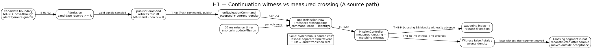
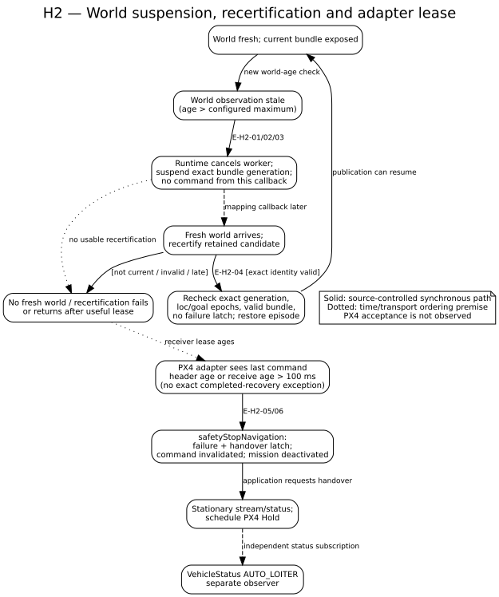
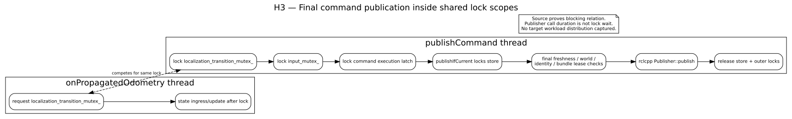
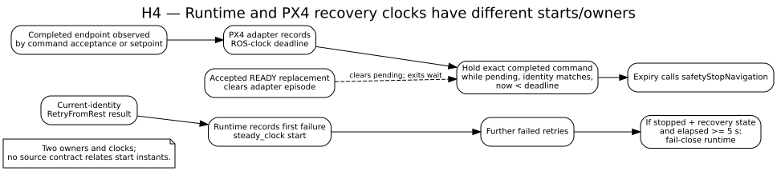
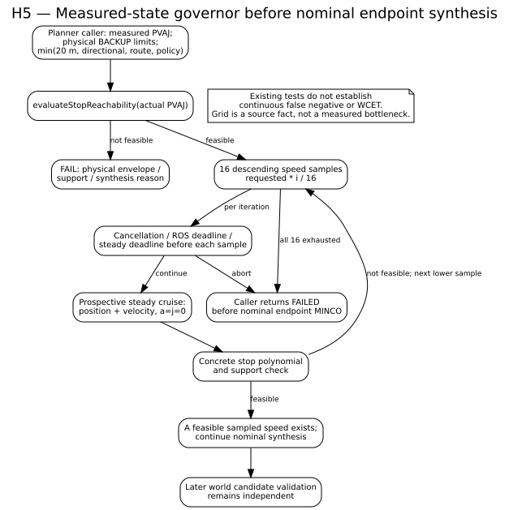
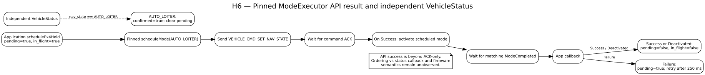

Audit giả thuyết nghẽn H0–H7
uav-navigation · 2026-09-20 · source-first, offline artifact
PARTIAL_AS_IS Không có trace workload khớp source, binary và profile; chưa đủ căn cứ xếp hạng bottleneck thực tế.
Drift khi chốt: checkout chuyển từ baseline HEAD 9534d8dc sang 8eaab3d3 trong khi audit đang chạy; 15 source-manifest paths khác A. Verdict ở đây giữ riêng theo frozen A/initial B. H1–H5 trên checkout hiện tại chưa xác minh. Chi tiết/hash drift.
Đọc báo cáo verdict · claims.json · evidence refs · lệnh test/build
Kết luận nhanh
Đã xác nhận trong source
Loader có nhánh sim-time + zero tracking coefficients; world suspension chỉ resume exact recertified bundle; ROS publish nằm trong lock scope dùng chung với odometry; governor có fixed 16-speed grid.
Có điều kiện
H1 crossing có thể mất ở MissionController khi witness thiếu và measured segment không còn; chưa chứng minh runtime producer/admission phát candidate với timeline đó. H2 terminal handover là fail-closed, chưa chứng minh lỗi liveness.
Nhận xét đã thu hẹp
PX4 ModeExecutor Success không chỉ là ACK: pinned implementation chờ ModeCompleted. Timer cùng 5 s không chứng minh xung đột. Lock contention không đồng nghĩa bottleneck target.
Verdict H0–H7
| Claim | Verdict | Evidence level | Missing proof |
|---|---|---|---|
| H0 · profile premises | CONFIRMED_WITH_SCOPE | Loader fixture executed; source/config reviewed | Live param dump, launch argv, mission, RMW, binary identity |
| H1 · continuation/crossing | CONDITIONAL | Production MissionController local counterexample; static upstream path | Candidate thật qua geometry/admission và matched state trace |
| H2 · world suspension/lease | CONFIRMED_WITH_SCOPE | Static reachable fail-closed branch; helper tests | Transport timeline, adapter execution, PX4 acceptance |
| H3 · publish lock | STRUCTURE CONFIRMED; BOTTLENECK UNRESOLVED | Source lock scope + store barrier test | No-fault target distribution and lock wait/hold separation |
| H4 · recovery timers | CONDITIONAL | Distinct owners/start events/clocks in source | Budget spec and same-episode adapter test |
| H5 · governor/support | NOT_REPRODUCED | Unit tests + 24-input helper sweep | Reachable world/route candidate and duration oracle |
| H6 · Hold API/status | ACK-ONLY REFUTED; ORDER UNRESOLVED | Pinned submodule implementation and app callbacks | PX4 firmware and matched status/callback trace |
| H7 · actual bottleneck | UNRESOLVED | Source funnel, no workload cohort | Correlated run trace and measured alternatives |
Diagram source và SVG
Đường liền là call/guard đồng bộ; nét đứt là callback/event/timer riêng; chấm là điều kiện thời gian chưa quan sát. Mỗi hình liên kết source DOT.
H1 · continuation witness
{kind=link}

H2 · world suspension
{kind=link}

H3 · publication lock scope
{kind=link}

H4 · recovery clocks
{kind=link}

H5 · governor
{kind=link}

H6 · Hold API ordering
{kind=link}

Evidence và reproducibility
- H0 profile matrix và loader truth table
- H3 lock timeline và giới hạn bottleneck claim
- H4 timer owner/start/clock/clear
- H7 decision funnel và alternative rejects
- Controlled scenarios và negative controls
- Baseline A/B provenance
- Build/test commands, exit codes và log paths
Key source links (A snapshot; line range nằm trong refs)
- H0 · tracking loader
- H1 · reserve/witness helpers · MissionController crossing gate
- H2/H3/H4 · runtime suspension, exposure and timer sites · PX4 adapter decisions
- H5 · speed governor · planner caller
- H6 · pinned ModeExecutor source
Source refs giữ relative path của A snapshot, line range, excerpt và SHA-256; H6 dùng pinned dependency source với revision riêng. Toàn bộ trang/hình ở local; không dùng CDN.